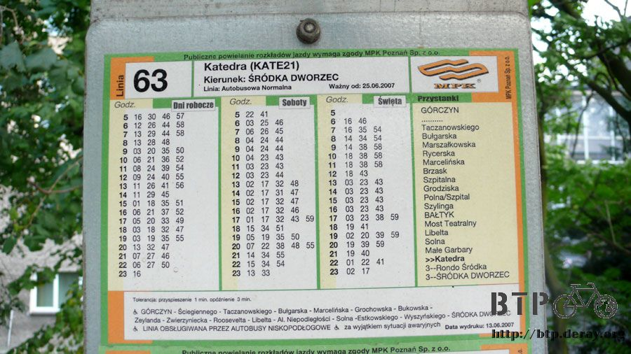
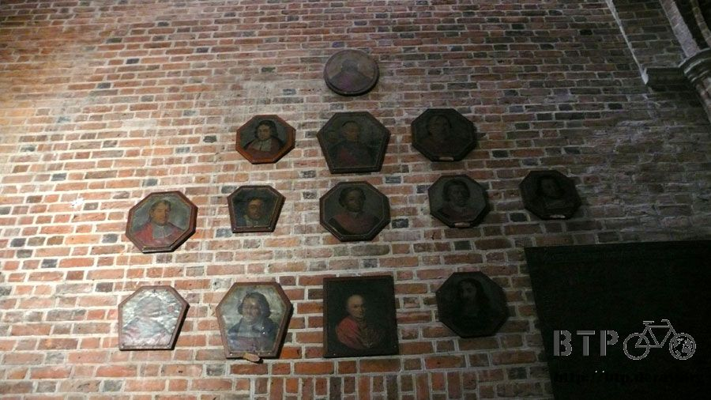
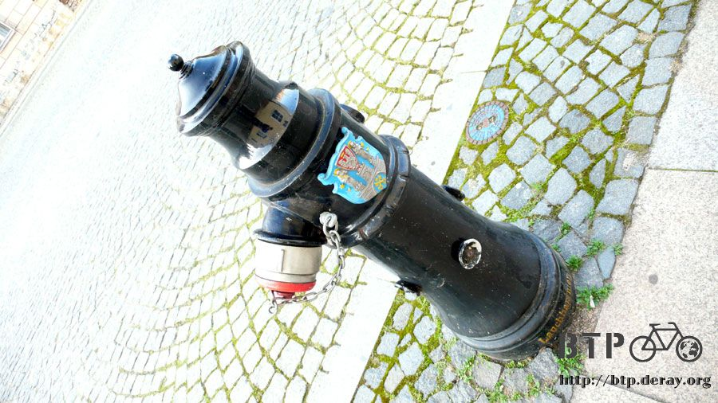
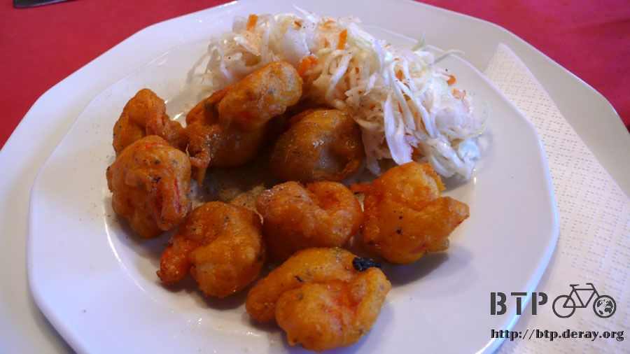

莊嚴肅穆大教堂
小多在波蘭境內換了新的前後輪之後，最大的問題已經解決，剩下都是一些小損壞，小鵝跟大猩猩合力把它們全部都修復完畢。
因為我是豬頭的緣故，某一次拆前輪的時候忘記把花鼓發電的電線拔掉，還覺得為什麼輪胎拆不下來，被什麼東西卡住嗎？
用力一扯的後果就是車燈連接到發電機的電線被扯斷掉了，已經壞了超過一個月以上，我都不敢坦白講自己把這個弄壞。
因為當下沒辦法修復，要是說出來的話又會擔心被說夜騎沒有燈照明會很危險，碎碎唸的聲音肯定排山倒海而來。
自知之明就是天黑之前要落腳，不要摸黑騎車，這一路也是平安度過，現在終於可以修復。
大猩猩將正負極的電線重新接回去，用膠帶纏繞絕緣，明亮的車頭燈又可以正常運作了。
小鵝跟大猩猩都在波蘭念醫學院，對於修理自行車跟其它所有能夠捲起袖子自己來的工作 ，完全不假手他人，在國外生活久了真的什麼都要會才行。
前輪貨架掉了一顆螺絲至少有三個月以上了，整個螺絲孔的紋路都磨損，本來覺得沒希望修復，但是也被大猩猩想出辦法。
在螺絲孔中敲入一個空心的塑膠管，裡面有螺絲的紋路，接下來就能鎖上一個比較小顆的螺絲，前後再用束帶固定起來，又解決了一個難題。
其它還有碼表感應器鬆脫的部分，本來我自己用透明膠帶纏繞幾圈就算修好，這次重新用雙面膠黏著再加上束帶補強。
換了新的後輪之後騎車會發出喀哩喀哩的聲音，大猩猩建議是換上新的鏈條，然後變速器要重新調整，聽起來就是大工程@@"
怕太麻煩他們所以這部分就先不動工，明天就要開學的大家要面對的可是沉重的醫學院課程，小多維修部分就到此告一段落。
今天不開飛雅特滿街跑，改搭公車，公車跟電車用的是同一種票劵，以分鐘為單位計費，在時間之內可以無限制轉乘。
之後我自己逛市區時有可能也會搭電車移動，所以小鵝先帶著我搭一次，這樣接下來我自己才知道該怎麼搭。
公車站都會標示哪些車次會停靠，白底黑色的是一般車種，黑底白字則是夜間公車，紅色是特殊公車。
目的地是沙洲中的一座大教堂，搭六十三號可以直達。
車上貼有停靠的站點以及每一站之間所需要的搭乘時間，基本上都是一～三分鐘就可到達一站，乘客可以輕鬆計算自己該打多少時間的票。
站名底下的小字則是所在的街道名稱，同時附帶有轉乘車次的資訊。
聯結在一起的公車內部空間很寬廣，一共有三個車門，沒有固定哪一個是上車用或是下車用。
當公車停靠的時候必須按車外的按鈕車門才會開，下車的時候也是一樣。
司機只負責開車，任何關於開關車門、售票、查票這些他都不需要負責。
搭乘公車或是電車完全是憑自己良心付費，要逃票是很容易的事情，不見得每個人上車都會將票劵插進機器裡打上時間。
因為有些人持的是月票或是年票，只需要帶在身上，有人查票時再拿出來檢查即可。
在上車之前就要先買票，街邊的香菸攤就可以輕鬆購入，買十張還送一張。
搭上車之後自行打卡，完全都沒有人監督你，偶爾會有票務人員上車查票，罰責輕重則不清楚。
公車搭乘的方式是搭越久越便宜，基本的票劵是以十分鐘為一個單位，售價是一點三茲羅提，折合台幣約十五元。
十五元的票可以搭十分鐘的車，從上車之後將票劵插進機器裡打上時間開始計算，至少可以搭五站以上的距離。
若是在上車的時候連續打兩張車票，搭乘的時間就變成三十分鐘；連續打三張車票則可以一口氣搭上一小時的公車。
也有直接販賣以三十分鐘為單位的車票，這樣就不需要打兩張十分鐘的車票，學生優待票通通是半價。
年票很誇張，大約是兩百茲羅提，平均每天不到一元，只要兩天搭一次公車就回本了，而且年票是完全不限制搭乘時間跟次數的超級優待票種。
一開始覺得用時間為單位計算有點麻煩，但是憑同樣一張票劵就可以在時限內轉乘其他車次，而且搭越久越便宜，其實這種計費方式對乘客是有利的。
不知道除了波蘭之外有沒有其它國家也是用這種特殊的計費方式？
公車站的告示牌很清楚標示出到站的時間，最左邊是平常日的車班、中間是星期六、右邊則是假日，從早上五點到晚上十一點都有車子可以搭。

最右邊的清單則是公車會經過的停靠站，站名旁邊有雙箭頭粗體字的就是這一站的名字，接下來的站點會標示出所需的搭乘時間。
目前所在位置是『Katedra』站，這裡是一條大河中央的沙洲，有兩座很漂亮而且年代悠久的教堂。
一下車就會看見尖塔式的教堂建築，走地下道繞過道路就能到對面去。
地下道有些塗鴉，但整體來說算很乾淨，走在歐洲的街道常常轉一個彎就會看見華麗的教堂建築，走在波蘭的街道，隨時都有辣妹擦身而過，活著真好！
這邊就是教堂的入口，主要分為兩棟，左邊那一棟是完全沒有經過戰火摧殘的教堂，已經有一千年以上的歷史，保存至今仍完好無缺。
右邊則是一座雙尖塔的大教堂，裡面有一位主教在此傳道，教宗若望保祿二世也曾經拜訪過這一間教堂。
可惜它在二戰被炸毀一部分，所以有重建過，外觀看起來比較新一點，儘管如此，裡面的所有東西全部都是古董，包含最不起眼的小板凳在內。
這一棟是左邊那座教堂，建於西元九六八年，扳扳手指頭計算一下它有多老。
這是教宗來訪的紀念銅像，底下的小油燈是波蘭的傳統，萬聖節的時候美國在吃南瓜跟要糖果，波蘭人則到墓區去掃墓，點上小油燈。
夜晚的時候目光所及到處都是油燈的燈火，這樣的景色有機會看過的話肯定終生難忘。
大教堂的正面，一樣是用紅色的磚瓦建築而成，頂端的尖塔都是青綠色，不知道是氧化還是特別挑這樣的石材。
彩繪玻璃從外面看起來是很普通的，進到裡面透過陽光映照出的光彩絢麗奪目，外在美很普通，內在美很驚人。
正門入口，非常非常低調，同時也非常難得地，這次旅行終於有參觀室內建築的時候。
入口大門兩側掛著的燈火，夜間才會點亮，同時整棟教堂在夜間會有特殊的照明。
若是依照之前的慣例，這座教堂介紹到此就算結束了，但今天不一樣，現在才正式開始參觀。
因為我的宗教知識很匱乏，在理解範圍之外的東西，就不多做評論講解，以免鬧笑話或是鬼扯一通。
如果有天主教背景的朋友願意補充這些照片的內容，那真是萬分感謝。
底下的照片數量會比文字還要多出很多，請自己欣賞，等補充的資料齊全我會一張一張說明內容，大家一起長知識。
進去之前再複習一下基本禮貌，短褲、汗衫、帽子、墨鏡這些請自覺地不要穿戴進教堂，室內不論再暗，拍照的時候也不可以開閃光燈。

開始吧～
入口正門頂端的浮雕，看這個顏色應該是銀製品但是已經氧化。
大門兩側的浮雕，光是一個門就可以做得這麼精緻，還沒進去已經感受到那種宗教的震撼。
和敦煌的壁畫感覺有異曲同工之妙，這些畫作除了是藝術品之外，也有說故事的感覺，每一幅畫都是一個歷史或是聖經故事。
一走進大門所看見的景色，完全靠日光照明，白天沒有額外的燈火，內部稍暗，大理石的建材則讓室溫變得涼爽舒適。
照片拍攝出來如果有顆粒過粗的情形還請不要太嫌棄。
進教堂之後往外看，和裡面的氣氛相比，陽光顯得那樣刺眼。
從外面看不出端倪的彩繪玻璃，一幅幅都展現出了她的美麗姿態。
主廳的座位區，禮拜做完之後就變得空曠一些，星期日早上這裡可是人山人海的。
一進來教堂就會看見兩個裝聖水的石雕，聖水只有一點點， 用手指沾濕之後從額頭開始依序畫出十字架，搭配上屈膝的姿勢。
有盔甲跟武器伴隨一旁，這個人像是騎士，人形的雕像寫上名字跟簡介放置在牆邊，裡頭就是墳墓。
整座教堂裡面有許多像這樣的墳墓，從外觀就可以知道他生前的模樣，雖然知道裡頭是骨骸，但是不會有害怕的感覺。
教堂分為一個大廳，兩旁有走道連接到獨立的小廳，每一個廳展示的東西都不一樣，主要由畫作、雕像、墳墓、彩繪玻璃組合而成。
處處可見墳墓，能夠埋葬在這棟教堂裡想必都是有頭有臉的大人物、主教或是對波茲南有貢獻的人。
主廳最內部的雕像，一尊一尊地還挺像佛教的感覺，照片拍不出那種金碧輝煌的質感，可惜。
有些小廳比較珍貴就不開放參觀，要提出申請才行，外頭會用很漂亮柵欄圍起來，雖然不能進去，但是透過柵欄還是可以看見所有的藝術品。
這邊展示著一幅很有名的畫作，紅色的聖母像，真跡已經移到別的地方去，相傳當時十字軍入侵波蘭打到這座教堂的時候，這幅畫流下紅色的血淚。
靠近一點看，是一幅很有立體感的作品，上方的頭像還鑲有黃金飾品。
這一間是教堂最深處的小展廳，黃金祈禱室，顧名思義裡面全部都是用黃金打造而成，進去參觀要付費。
相機拍不出黃金的質感，肉眼親自看到是非常令人震撼的一個展廳。
黃金祈禱室的天花板。
窗戶上的彩繪跟雕刻。

壁面上的畫作，其它東西全部都是黃金打造，教堂中大量使用黃金不會有奢華的感覺，而是一種更令人讚嘆的藝術之美。
黃金祈禱室的地板，圓圈的外圍都是字母，語言不明。

埋葬在黃金祈禱室正面的墳墓，頭上帶著那麼大一頂帽子，想必是一位大人物。

看起來只是很普通的大頭像掛在牆壁上，但根本不敢想像這些畫作的歷史有多久。

坐在最前排的椅子看見的就是這樣的景色，左邊是一個裝飾華麗的小樓梯，底下有一個小書桌加上照明。
前面是金碧輝煌的一尊尊金色雕像，頭上全部都是彩繪玻璃，前面的桌子是作禮拜的講台，進到裡面講話自然都會降低音量，連呼吸都不敢太大聲。
這就是底下的那一本書，內文不明。
呼～參觀完畢了，跟在日本京都參觀三十三間堂的時候所感受到的宗教力量不相上下，往外走出去再度回到波蘭美女環繞的世界。
這邊的地板都是傳統的石頭鋪面，被踩踏了幾百年依然完好，跟台灣人行道磚瓦動不動就破破爛爛相比，這真是了不起的建築工藝。
正門口地板上的圖騰，完全用石頭的原色拼湊而成。
教堂外的消防栓，上面也有教堂的徽章。

這是教堂的背面，頂端有很多的塔式建築物，從教堂內不知道該怎麼上去。

波茲南看不到流浪狗，倒是很多辣妹會牽著大狼狗逛街、每年流行的狗都不一樣，有時候會變成迷你犬。
狗都會掛上項圈，所以一定有主人飼養，貓咪就比較不受拘束，在教堂後面看見兩隻曬太陽的虎斑貓。
看起來很乾淨，也不怕陌生人，手一伸出去馬上就靠過來，大概也是有人養的，但是放心地讓牠們在教堂區自由活動。
喜歡養貓跟喜歡養狗的人一定有很大的差異，畢竟這兩種動物本身的差異性就很大。
參觀完教堂之後肚子也餓扁了，晚餐到一個很大的人工湖旁吃印度料理。
這個人工湖也是歷史悠久，會舉辦划船比賽，有跑道跟看台，這邊也很適合騎自行車來閒晃。
看起來很高雅的印度料理餐廳就蓋在湖畔，吃大餐的時間又到啦。
肚子餓的人趕緊跑開，或是去泡碗麵再接著往下看。
菜單，有看沒有懂，價位都在三十茲羅提以下，換成台幣約四百元一份。
都是咖哩類的料理，有羊、魚、雞三種可以選，沒有牛跟豬，白飯無限量供應，肚子餓的時候可以吃得很開心。
順便講解一下歐洲其它國家的物價，餐廳不免費供應開水是常態，義大利餐廳一杯開水就要八歐元，台幣三百起跳。
一瓶五百CC的寶特瓶裝可口可樂，在義大利街邊的小商店買，還不是在餐廳買的價格喔，一瓶要十四歐元，相當於台幣六百元。
歐洲的消費水準是非常驚人的恐怖，回想起來自己當初環法的時候五十一天花十萬，平均一天兩千元，
而且幾乎天天都睡旅館，那時候還是七、八月的旅遊旺季，真是便宜得不可思議了。
上面菜單的價錢到了歐洲之後標價不會改變，只是貨幣通通變成歐元，吃一頓飯沒有一百歐元是走不出餐廳的。
衡量過物價水準之後，在波蘭的生活壓力跟旅遊的開銷算是很便宜，省吃儉用的自助旅行玩一個月所花的開銷，大概只能在歐盟的其它國家玩一星期。
前菜，炸蝦仁，這個很好吃，只是在波蘭不靠海的城市吃海鮮要小心，吃壞肚子是很正常的，這邊賣的鮭魚可都是詭異的咖啡色...
超市裡賣的魚也是從新鮮擺到接近腐爛邊緣還在販售，而且價錢很貴，等到快臭掉的極限時才從架上收下來，不是丟掉喔，而是燻成魚乾繼續賣。

醬料分三種，綠色的跟兩種咖啡色的，有一個是辣醬，滋味超棒！光是用它拌飯吃，吃掉三碗公都沒問題。
當然今天的好料一整桌，不需要光拌辣醬配白飯，重新看到這張照片我又餓了>"<
印度料理的特色就是看起來不怎麼樣，但是吃起來每一道都是絕佳的滋味。
遊記寫了這麼久，我發現自己不會介紹的東西有兩種，第一是藝術品，第二是美食。
每次看到藝術品時，心中感受到的悸動用文字表達出來完全不及百分之一，嘴巴裡吃到的美食也是一樣，除了用好吃之外該怎麼形容這個滋味呢？
難怪中華小廚師裡面，每當吃到美食的時候，都會有龍飛鳳舞的畫面，看起來雖然很誇張，但是實際吃到料理的人真是有這樣的感受。
旅行是一件很美好的事情，跟團旅行則完全不推薦。
自助旅行又簡單分為兩種，自己一個人來，和朋友一起來。
獨自展開的旅行又是完全不同的感受，視野開闊的程度、內心所感受到的點滴，當旅行完畢流浪一圈回到原本的生活。
別人問你去了那麼多地方有什麼感觸？
就算回答不出來也沒有關係，因為這些收穫只有自己內心最清楚，講出來的時候已經沒那麼真切，聽的人更無法了解旅行的滋味。
至於遊記寫不寫真的無所謂，花時間整理這些東西，常常讓我覺得比騎車還辛苦。
沒有一天是心甘情願在記錄這些旅行的細節，用那麼多文字加上照片跟無止盡的時間來整理，真是比和鱷魚搏鬥還要累人。
我真的寧可跟鱷魚打上一架也不要寫遊記，有時間整理這些，不如去外面呼吸新鮮空氣、多看一點城市風光。
寫遊記的時候我都當成是寫給米莎莎看，以及我老的時候如果得了失憶症或是癡呆症，起碼還可以看點東西憶當年。
因為如此才有一篇一篇寫下去的動力，這次旅行不能帶著她一起同行，實在很過意不去，只好透過遊記將所見所聞分享給她。
附帶一提，這次的遊記不會有出書的可能性，本來就不是以賺錢為目的的旅行，何必要出書引來更多的爭議。
喜歡遊記的人就透過網路欣賞吧，少砍一點樹，少印刷一些紙張，讓地球多一點綠意～
繼續閱讀：8.28 宅男出大門
波蘭-茲羅提－ 1：12 台幣
8.27 |
總計：0元 |
出外靠朋友 |
|